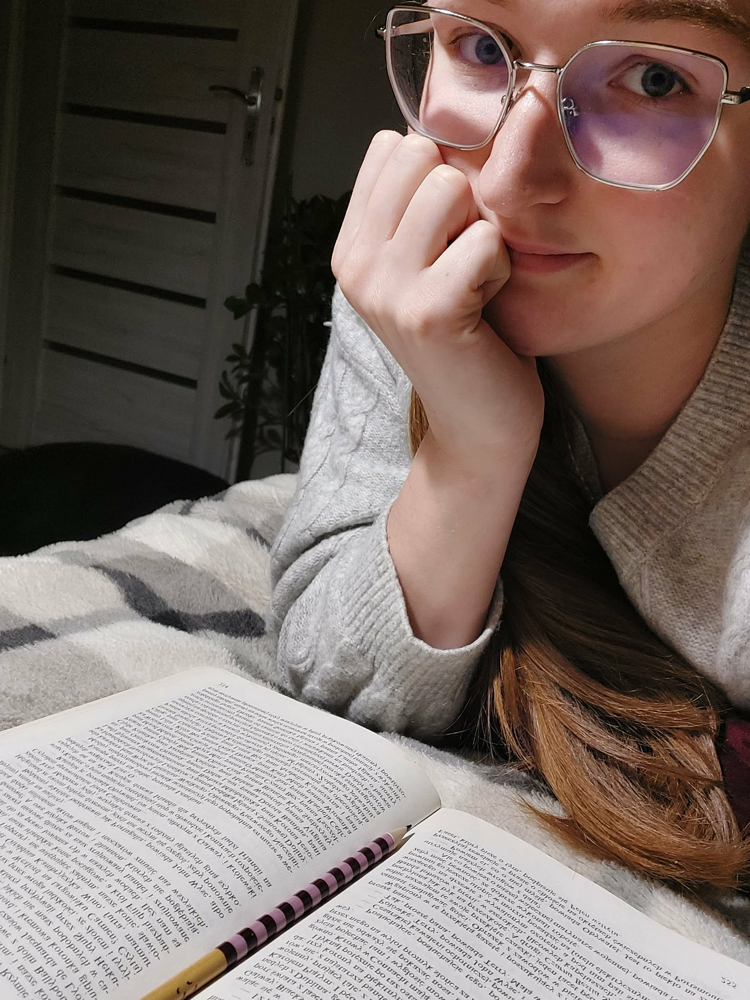

Joanna Płachcińska
jplachcinska.red@gmail.com
Redaktorka | Korektorka | Copywriterka
Redaktorka | Korektorka | Copywriterka

Zajmuję się redakcją i tworzeniem tekstów – od artykułów i publikacji po treści marketingowe. Specjalizuję się w pracy z tekstem naukowym i popularnonaukowym.
E-mail: jplachcinska.red@gmail.com